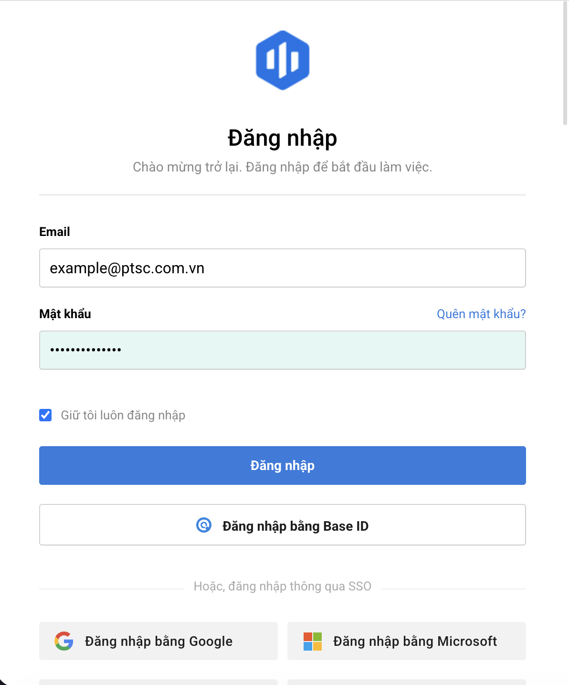
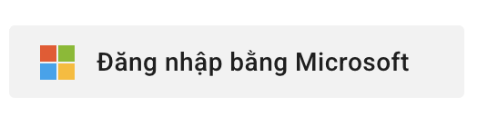

1
Đăng nhập hệ thống Base
Truy cập địa chỉ hệ thống trên trình duyệt Web (Chrome, Cốc Cốc,
Edge). Nhập đầy đủ Email công việc (PSB Email) và
Mật khẩu, sau đó nhấn nút
"Đăng nhập".

Ngoài ra bạn có thể đang nhập bằng tài khoản mail của mình bằng cách
ấn nút: Đăng nhập bằng Microsoft

2
Truy cập ứng dụng Base Service
Tại giao diện trung tâm điều hành Base, nhấn vào biểu tượng menu ứng
dụng (dưới cùng bên trái) và chọn ứng dụng
Service (Dịch vụ nội bộ)

3
Giới thiệu tổng quan
Ở giao diện Kanban, bạn có thể xem tổng quan các giai đoạn cần thực
hiện trong quy trình và xem được tiến độ xử lý của các phiếu đề
xuất.

Phiếu đề xuất được luân chuyển lần lượt qua các bước, tại mỗi bước
sẽ giao cho thành viên chuyên trách xử lý. Sau khi hoàn thành công
việc ở một bước, phiếu sẽ được chuyển sang bước tiếp theo. Lặp lại
thao tác cho đến khi phiếu đề xuất đi qua hết tất cả các bước thì
hoàn thành quy trình.
4
Tạo phiếu đề xuất
Nhấn nút "+ Phiếu" ở góc trên bên phải để mở giao
diện tạo phiếu.

Sau đó hệ thống có thể sẽ yêu cầu bạn chọn một dịch vụ để tạo phiếu.
Chọn dịch vụ phù hợp với nhu cầu của bạn, ví dụ:
Base | 1.QT Thanh toán

5
Kiểm tra phiếu bạn cần xử lý
Có thể xem các phiếu đến lượt bạn xử lý bằng nhiều cách
-
Cách 1: Vào mục phiếu Đến lượt tôi

-
Cách 2: Kiểm tra phần nhắc việc của hệ thống
nếu có thời gian yêu cầu xử lý. Hoặc kiểm tra mục thông báo

-
Cách 3: Truy cập quy trình, chọn dạng kanban,
tìm đến giai đoạn có phiếu mà bạn đang phụ trách xử lý

6
Xét duyệt phiếu
Nhấp vào phiếu để mở giao diện chi tiết. Kiểm tra nội dung, file
đính kèm và các thông tin liên quan. Sau đó nhấn nút
"Duyệt" hoặc "Từ chối duyệt" để xử
lý phiếu.


7
Kí nội bộ
Tổng quan các bước-
Bước 1: Kiểm tra nhắc việc hoặc bộ lọc phiếu
tới lượt xử lý

-
Bước 2: Đọc nội dung file và xác nhận ký

-
Bước 3: Thêm chữ ký, chọn hình thức chữ ký
(ảnh và chữ/ chỉ có ảnh). Kéo chữ ký vào vị trí cần ký
Có thể chọn giữa kí đơn và kí nháy. Cụ thể:

- Kí đơn: Chọn hình thức ký số bằng ảnh và chữ. Sau đó kéo thả chữ ký vào vị trí cần ký.
- Kí nháy: Chữ ký vắn tắt của người soạn thảo, ý không viết rõ họ tên như kí đơn mà chỉ ký tắt hoặc viết gọn chữ cái
- Bước 4: Ấn xác nhận, điền lý do nếu có.
8
Gợi ý vị trí kí
Để các bộ phận có thể dễ dàng ký số, người tạo phiếu có thể gợi ý vị
trí ký số bằng cách thêm các vị trí ký số vào file
đính kèm. Khi đến lượt ký số, hệ thống sẽ hiển thị chữ kí ở các vị
trí được gợi ý để người ký có thể xác nhận.

9
Trình kí để xuất
Trong những trường hợp đặc biệt khi file của bạn khác với các biểu
mẫu có sẵn hoặc bạn muốn tự thêm người kí, bạn có thể trình kí văn
bản mới.


10
Thực hiện phiếu được giao
-
Cách 1: Khi bạn là người phụ trách xử lý phiếu
yêu cầu, hãy nhấp mở giao diện bên trong phiếu để đọc nội dung.
Nhấn Thực hiện và điền thêm một số trường thông tin, đính kèm file
(nếu được yêu cầu), hoặc chọn Không thực hiện.

-
Cách 2: Tại giao diện kanban, có thể nhấn nhanh
vào biểu tượng thực hiện hoặc không thực hiện

11
Tìm kiếm và trích xuất
-
Lọc các phiếu theo vai trò: người tạo, người xử lý, người theo
dõi,....

-
Trích xuất dữ liệu phiếu ra file Excel để tổng hợp và báo cáo

12
In theo mẫu
Đối với các quy trình đã được cài mẫu in, trường hợp cần lưu phiếu
dưới dạng file mẫu của công ty, bạn có thể dùng tính năng in theo
mẫu

13
Chỉnh sửa phiếu
Tại mỗi giai đoạn, bạn chỉ được chỉnh sửa các trường thông tin được
phân quyền

14
Nhân bản phiếu
Đề tạo nhanh phiếu đề xuất, bạn có thể sử dụng tính năng nhân bản
phiếu đề xuất cũ

Guide web thanh toán hoàn ứng
1
Mở ứng dụng Base trên Điện thoại
Mở ứng dụng Base.vn trên màn hình điện thoại (iOS /
Android). Đăng nhập bằng email công việc và mật khẩu.

2
Chuyển đến ứng dụng Request / Service
Tại giao diện chính của App, chọn mục Request hoặc
Service từ danh sách ứng dụng ở thanh điều hướng.

3
Tạo Đề xuất mới trên Mobile
Chạm vào biểu tượng nút dấu cộng (+) ở góc dưới màn
hình. Chọn loại Nhóm đề xuất/Thanh toán cần gửi.

4
Nhập nội dung Đề xuất
Điền tên đề xuất, số tiền, nội dung chi tiết bằng bàn phím điện
thoại. Giao diện thiết kế tối ưu hiển thị ô nhập rõ ràng.

5
Tải chứng từ / Chụp ảnh Hóa đơn trực tiếp
Chạm vào biểu tượng Đính kèm: Bạn có thể chọn file
từ thư viện ảnh hoặc dùng Camera chụp trực tiếp hóa đơn/chứng từ
thực tế.

6
Chạm nút Gửi Đề xuất
Chạm vào nút "Gửi" ở góc trên bên phải hoặc cuối
màn hình để đẩy phiếu lên hệ thống.

7
Nhận Thông báo Duyệt (Notification)
Khi có đề xuất mới cần duyệt, điện thoại Quản lý/Kế toán sẽ nhận
được Thông báo đẩy (Push Notification) tức thì.

8
Xem chi tiết Phiếu trên Điện thoại
Chạm trực tiếp vào thông báo để mở xem nội dung phiếu, kiểm tra hình
ảnh chứng từ đính kèm ngay trên màn hình di động.

9
Xác thực Ký số Di động (Smart CA / OTP)
Đối với ký số trên Mobile: Xác nhận qua ứng dụng chữ ký số từ xa
(Smart CA) hoặc nhập mã OTP gửi về điện thoại để duyệt ký.

10
Bấm Duyệt / Từ chối bằng 1 chạm
Chạm nút "Duyệt" (màu xanh) để hoàn thành phê duyệt
hoặc chọn "Từ chối" (màu đỏ) nếu cần trả lại
phiếu[cite: 1, 2].